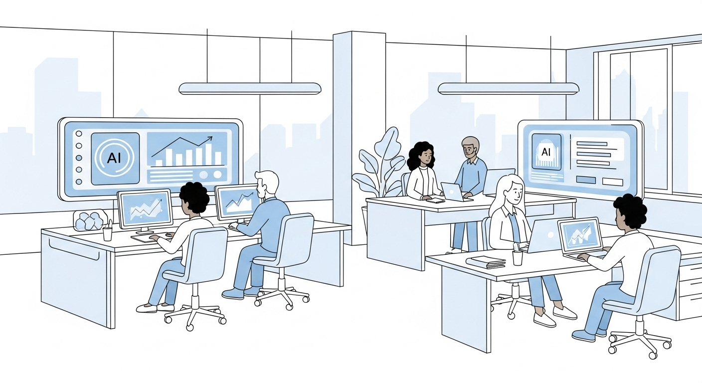
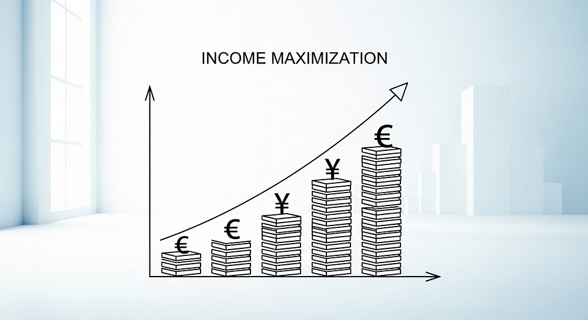
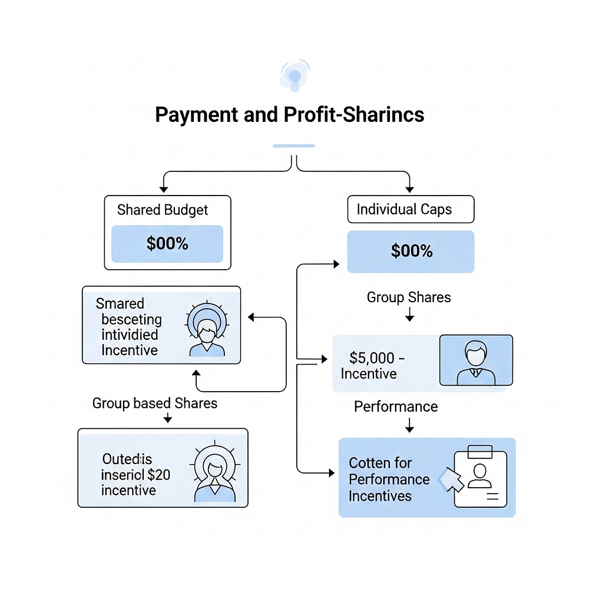
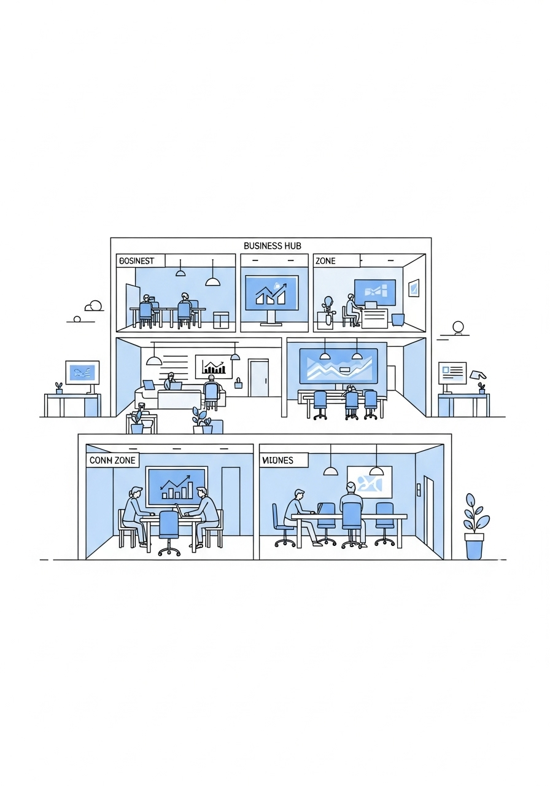
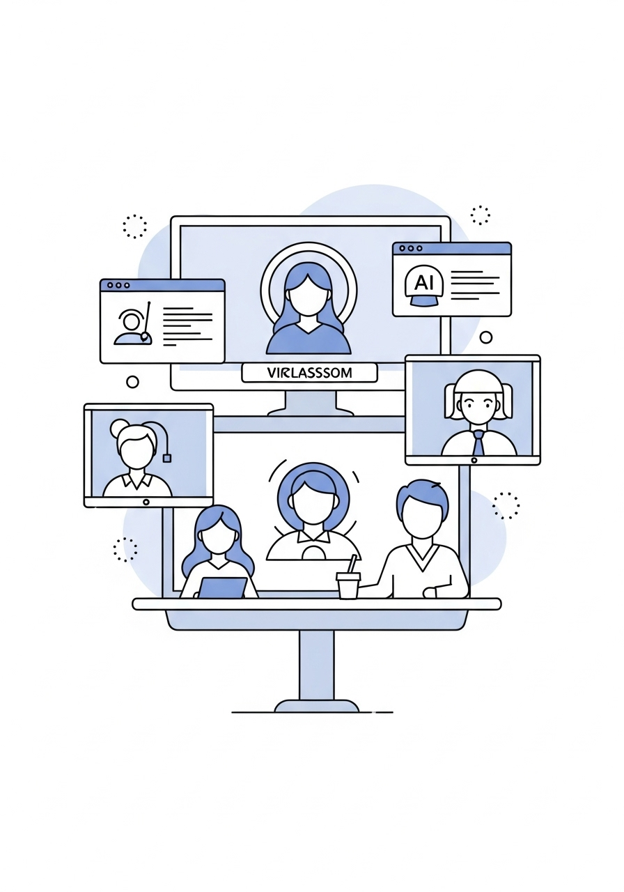

challengers - apply - challenger onboarding
challenger onboarding
"SISTAR Challenger Onboarding & Operational Procedures — Complete step-by-step guidelines from Invitation Letter and Welcome Workshop to Master Agreement and active Project Stage execution."
▫️ Welcome to SISTAR Challengers: Invitation, Orientation & Checklist
Onboarding into SISTAR Challengers Int'l (*SC Astronaut Ops) is designed to be simple, transparent, and immediately rewarding:
- • Invitation Letter & Welcome Workshop: Every prospective Project Leader, Specialist, and Area Manager begins with our official Invitation Letter and interactive Welcome Workshop—aligning on the qubit-algorithm, corporate vision, and active portfolio opportunities.
- • Standardized Onboarding Checklist & Be-Assured Protocol: Guides new members through Google Workspace setup, digital communication norms, AI tool access, and a review of the Mgnt. Project Console, Monthly Sales, and Dashboard files.


▫️ Contractual Governance, Master Agreement & Projects On-Stage
All Challenger engagements follow a clear 5-step contractual workflow explained thoroughly prior to signing:
- • 5-Step Execution Procedure: Invitation/Application → Task Allocation → Formal Master Agreement (6-month renewable term) → AI-Supported Workspace Execution → Monthly Evaluation & Payout on the 25th.
- • Immediate Allocation to Projects On-Stage: Validated Challengers are matched directly with live revenue-generating tracks across AI SaaS, Scarlet Commerce, Vet Specialties, Mind/Edu Caring, and regional Area Management.

▫️ Detailed Archive: Team SISTAR Company
Comprehensive operational records, strategic frameworks, and source specifications preserved from Team SISTAR Company:
- • SISTAR Company: Innovating Together, Growing Stronger
- • A project company developing innovative products, services, and IT solutions through the power of collaboration and advanced AI technology.
- • Developing cutting-edge products, services, and IT solutions, transforming concepts into reality across global platforms.
- • Creating unified business platforms, slogans, hubs, and campaigns that work together in a cohesive ecosystem.
- • Fostering environments where partners, investors, and team members engage in business and achieve mutual success.
- • We stay updated and adapt fast, aiming to lead the market rather than merely follow trends.
- • Our team generates innovative business ideas, catchy slogans, and effective campaigns that drive growth.
- • "Together gets stronger." We believe collaboration strengthens businesses, especially amidst evolving challenges.
- • We advocate for simple and minimal approaches to work and life, rethinking modern work paradigms.
- • Join Our Innovation Journey
- • We're actively seeking daring partners and dedicated team members to join us in developing groundbreaking ideas. Our website serves as a comprehensive proposal platform for prospective team members, business partners, and investors.
- • Join a team that values creative thinking and bold approaches to business challenges.
- • Collaborative Environment
- • Work in an ecosystem designed to foster synergistic growth and mutual success.
- • Be part of shaping new business practices and work methodologies for tomorrow.
- • Optimized Working Environment
- • Enjoy our Work-From-Home model, allowing you to work at home or from SISTAR Bases according to your preference.
- • Utilize Google Workspace and the Company Web & App as your primary work environments, supported by advanced AI tools.
- • Experience optimal working conditions with our innovative administrative management systems.
- • AI tools and flexible schedules help you work smarter and balance life.
- • Earn more with our profit-sharing and fair payment plans linked to your work.
- • Become an AI expert through hands-on learning and special training.
- • Global Reach & Shared Growth
- • We foster the growth of all partners and project members through continuous innovation and collaboration.
- • SISTAR unlocks unprecedented global opportunities, expanding horizons beyond conventional limits.
- • We are establishing a strong global presence and local networks through our headquarters and dedicated area managers worldwide.
- • Our Projects & Activities
- • SISTAR Business Platforms
- • Online and offline tools to help businesses grow and work together.
- • Specialized business centers for focused innovation in different industries.
- • SISTAR Business Campaigns
- • Partnerships for different business efforts, like our "Zero Cost, Double Income" program.
- • Ways to work with our brands and our growing global locations.
- • We create comprehensive business plans tailored to diverse markets and opportunities.
- • We identify and select the most suitable partners, clients, and market segments.
- • We develop specialized deals, including promotional packages, bulk offers, and franchise options (S1-6).
- • We implement plans and maintain ongoing relationships, supported by advanced AI assistance.
- • Start your project journey by applying or accepting an invitation.
- • AI intelligently assigns tasks that align with your skills and project requirements.
- • Clearly defined rules ensure a transparent and fair working arrangement.
- • Complete your tasks efficiently within Google Workspace, enhanced by AI assistance.
- • Get paid fairly, with compensation directly linked to your performance as measured by AI.
- • Payment & Profit-Sharing
- • Receive a consistent monthly salary based on your specific role and duties.
- • Shared Project Profits
- • Benefit from a portion of shared project earnings and bonus profits from successful orders.
- • Contribution-Based Pay
- • Your compensation is directly linked to your percentage contribution to each project.
- • Motivation Programs & Rewards
- • Gain extra rewards through our motivation programs and a dedicated points system.
- • Benefit from profit sharing, expense budget allocation, and performance-based bonuses, all managed through AI evaluation tools.
- • Enjoy the freedom of working from home with AI-allocated jobs and flexible scheduling, designed to maximize your productivity and work-life balance.
- • Access various incentives, annual bonuses, team rewards, and a range of engaging educational and social programs for all members.
- • Lead project teams, manage tasks, and make sure we meet SISTAR's goals.
- • Use your special skills to help with projects and work closely with your team.
- • Help run the main company operations and connect different projects and business groups.
- • Grow SISTAR's presence in specific areas and build local connections.
- • Human Resources & Team Building
- • We embrace a Simple & Minimal approach focused on motivation versus fair evaluation, creating a balanced and productive work environment.
- • Organizational Structure
- • Clear leadership path from D. Ku through HQ General Coordination to Head Business/Project leaders and Area Managers.
- • Training & Development
- • Participate in weekly/monthly training sessions with progress reports to track your development.
- • Camp/Academic Programs
- • Access on/offline curriculums covering AI, business development, and specialized skills with weekly gatherings.
- • Professional Certification
- • Pursue job-guaranteeing license programs and specialized training to advance your career.
- • Payment & Profit-Sharing: Your Compensation Explained
- • Our payment system is designed to reward your performance and share project profits fairly. Here's how it works:
- • Up to 30% of a project's profits (after costs) are set aside for team members.
- • No single member can receive more than 10% of this total 'Shared Budget'.
- • Your final payment combines several factors:
- • Members are divided into five groups (Group I to Group V) based on roles and contributions. Each group receives a base percentage of the shared budget, for example:
- • Beyond your group share, you can earn more through:
- • Sales Incentives: Direct rewards for your sales performance.
- • Target Bonuses: Bonuses for reaching specific project goals.
- • Innovation Rewards: Special payments for innovative ideas or unique contributions.
- • Motivation Programs: Long-term rewards like academic support or company equity.
- • Individual Performance
- • Your final payment within your group varies significantly based on your individual performance, rated from I to V in our 'Console' file.
- • The main file that calculates payment, group shares, and individual evaluations.
- • Details project objectives and work plans, helping determine the shared budget size.
- • Tracks project progress and provides data for performance evaluations.
- • In summary, your compensation is directly tied to the project's success and your contribution. It's based on your group's share, your individual performance, and various bonuses. We explain all payment principles and calculations before you sign your agreement, which becomes effective upon signing by both parties.
- • Every 25th of the month during your contract.
- • months from signing, extendable for another 6 months unless terminated.
- • All intellectual property developed belongs to SISTAR Company.
- • "Innovatives on Payment" (e.g., % of profit from random order drawings, Chip-in %, pay based on task contribution, project bonus budgets, shared expense budget for operations, mileage/points for rewards, and ideas to share profit).
- • Additional payments for HQ functions, Authorized Area Manager roles, and introducing new members/partners.
- • AI-allocated jobs with flexible hours
- • Ability to report additional jobs for calculation.
- • Incentives based on evaluation
- • Annual and team bonuses
- • Short, mid, and long-term motivation programs
- • Ownership opportunities.
- • Evaluation Criteria (Managed with AI Tools on WorkSpace):
- • % Sharing from Sales Revenue
- • % For Expense Budget allocation
- • % Contribution to Project (by number of Tasks/Time/Weight on Tasks)
- • % Performance vs. Tasks
- • % Total Pie for Each & Allocation % for the above.
- • Evaluations are renewed quarterly.

▫️ Detailed Archive: Orientation Oct. '25
Comprehensive operational records, strategic frameworks, and source specifications preserved from Orientation Oct. '25:
- • Against Ai Mega-trend, Paradigm-Shift
- • as Accelerated fr mid. '25.
- • (Doubt → Sure & Actions)
- • New ways in doing biz.
- • To Let Ai works for Ai.
- • Many No mores, fr mid Oct.'25
- • News ways in working, New ways in doing biz.
- • Flexibility/ Learning by Doing/ Light/ Trials/
- • Individual/ Dual Brands
- • Embracing new models for future growth and innovation.
- • Transforming uncertainty into decisive and impactful initiatives.
- • Adopting flexible and efficient remote collaboration strategies.
- • Leveraging artificial intelligence to build and optimize systems.
- • To apply concepts and strategies effectively in today's work and business landscape.
- • Action-Oriented Mindset
- • Embracing a "Just Do It" spirit, fostering quick execution and adaptability.
- • Continuous Advancement
- • Striving for innovative and cutting-edge solutions to stay ahead.
- • Focussing on delivering effective and practical solutions to complex problems.
- • Optimizing the utilization of all available resources for maximum impact.
- • Vibe-Working, Trials, Brains to get support by Ai.
- • Our foundation for AI insights begins with efficient data consolidation. This task focuses on the critical initial step of DataFeeding to ensure all necessary information is accessible and organized for processing by AI systems.
- • This framework is essential for guiding our operational processes. We address existing Issues w. TTP (Target/ Timeline/ Process) to streamline execution and improve overall project efficiency and outcomes.
- • Consolidating all data into a single, accessible location.
- • Inputting information into the system for processing.
- • Applying a specific framework or structured model.
- • Identifying and addressing potential problems or warnings.
- • Data Feeding, Ai works for Ai
- • Issues w. TTP (Target/ Timeline/ Process)
- • This comprehensive framework outlines the systematic approach to managing business operations, from initial ideation to execution and growth.
- • Identifying and filtering potential opportunities and initiatives for strategic development.
- • Planning and executing defined projects with clear objectives and deliverables.
- • Focusing on the development and evolution of products, services, or strategies.
- • Overseeing and coordinating resources, processes, and teams to achieve goals.
- • Creating, curating, and managing valuable information and media assets.
- • Developing and delivering educational programs to engage and empower the community.
- • Platforms (Commercial)
- • Building and maintaining commercial platforms for business operations and customer interaction.
- • Let them Pick/ Join. Formulating and presenting detailed plans or offers to secure new collaborations or contracts.
- • Our comprehensive payment and compensation strategy integrates both financial rewards and motivational incentives to foster a thriving and productive environment.
- • Allocating a portion of the company's expense budget to individual teams or projects, empowering them with financial autonomy.
- • Distributing a percentage of generated revenue or profits among employees, aligning individual success with company performance.
- • Recognizing and compensating unique skills, expertise, and specialized knowledge that employees bring to their roles.
- • Performance-based bonuses and commissions designed to reward sales teams for achieving and exceeding targets.
- • Implementing various forms of recognition and appreciation for outstanding contributions and achievements, both monetary and non-monetary.
- • Mid-Longterm Motivations
- • Strategies focused on career development, growth opportunities, and long-term benefits to sustain engagement and loyalty over time.
- • Business Development & Expansion
- • Strategic initiatives for market reach and portfolio growth:
- • Content & Brand Engagement
- • Enhancing our brand presence and engaging our audience:
- • Investing in our team's skills, collaboration, and professional development:
- • All flexible arrangements
- • Work by tasks/projects or hourly
- • Diverse income streams and opportunities:
- • Client proposals & accounts
- • Affiliate programs & partnerships
- • Specialized projects & courses
- • Certificate on Courses
- • Co-founder opportunities
- • Acc. Holder/ Area Mgr/ Affiliator/
- • Access to international network (KR, JP, VN, USA..)
- • Our comprehensive digital workspace is designed to foster seamless collaboration and productivity, bringing all essential tools into one integrated environment.
- • Your central hub for seamless access to all projects, applications, and resources, ensuring everything you need is just a click away.
- • Efficiently manage your schedule, track deadlines, and coordinate team events with an integrated calendar that keeps everyone aligned.
- • Facilitate instant communication and real-time discussions with team members through our intuitive messaging and collaboration platform.
- • Engage in in-depth discussions, share knowledge, and collaboratively solve problems in dedicated topic-based forums.
- • Access structured learning modules, training resources, and skill development programs to enhance your expertise within our educational platform.
- • Leverage a suite of tools designed to optimize team productivity, facilitate shared work, and streamline project management effectively.
- • Initiate the formal onboarding process by finalizing essential agreements, setting up necessary system accounts, and verifying identification for compliance and security.
- • Engage in comprehensive foundational training covering company culture, policies, essential tools, and an introduction to team roles and responsibilities.
- • Apply learned skills through direct, hands-on involvement in ongoing projects, receiving guided mentorship and practical experience tailored to your assigned role.
- • Our AI Education Program: Courses
- • This comprehensive educational program is designed to equip individuals and organizations with the knowledge and skills necessary to thrive in an AI-driven future, aligning with our overarching business transformation goals.
- • Foster Continuous Learning
- • Cultivate a mindset of continuous learning and adaptation to the rapidly evolving AI landscape , ensuring participants remain at the forefront of technological advancements.
- • Drive Strategic Automation
- • Empower participants to leverage AI for advanced automation across all business functions, striving towards a future where strategic oversight requires minimal manual intervention – enabling the vision of "Work 2 hours/week" through intelligent systems. This is achieved by mastering the principle of "Let AI work for AI."
- • Unlock Commercial AI Potential
- • Develop a deep understanding of AI-Comerce , market opportunities, and ethical implications, transforming insights into tangible business growth and innovation.
- • Enable Business Transformation
- • Provide the foundational and advanced competencies required to integrate AI seamlessly into existing operations, driving efficiency, creating new value streams , and fostering a culture of innovation.
- • Our curriculum offers a structured path through critical AI domains, designed to provide both theoretical understanding and practical application, directly supporting the Data-Feeding, PP DM CC PP Framework.
- • AI for Commerce & Customer Experience
- • Description: This module focuses on integrating AI within e-commerce strategies, enhancing customer journeys, and optimizing sales processes. It explores AI's role in personalization, predictive analytics, and conversational AI to elevate customer engagement.
- • Design AI-driven personalized shopping experiences.
- • Implement AI for intelligent customer support and communication (connecting to the Customer Communication aspect of our framework).
- • Utilize AI for demand forecasting and inventory optimization.
- • Practical Application: Develop prototypes for AI-powered recommendation engines or AI chatbots for customer service, integrating with real-world e-commerce platforms.
- • AI Tools & Implementation Strategies
- • Description: A hands-on course exploring leading AI/ML platforms, frameworks, and deployment methodologies. Participants will gain practical skills in using contemporary AI tools for data analysis, model development, and integration.
- • Proficiency in selected AI development environments (e.g., cloud AI services, popular libraries).
- • Ability to evaluate and select appropriate AI tools for specific business problems.
- • Understand best practices for AI model deployment and management.
- • Practical Application: Engage in coding exercises to build and deploy simple AI models, focusing on practical implementation within business contexts, echoing the Process Perfection and Data Management principles.
- • AI-Driven Project Management & Innovation
- • Description: This module focuses on the lifecycle of AI projects, from conception to deployment and continuous improvement. It covers project planning, resource allocation, risk management, and fostering innovation within AI initiatives.
- • Manage complex AI projects using agile methodologies.
- • Identify and mitigate risks inherent in AI development.
- • Cultivate innovative solutions through AI-driven design thinking.
- • Practical Application: Work on capstone projects, applying AI to solve real-world business challenges, aligning with the "Training by Project" step mentioned in the previous card.
- • Emerging AI Trends & Strategic Foresight
- • Description: Stay ahead of the curve by exploring the newest advancements and ethical considerations in AI. This course covers topics like Generative AI, Explainable AI (XAI), Edge AI, and the future impact of quantum computing on AI.
- • Analyze and anticipate future AI trends and their business implications.
- • Develop strategies for ethical AI deployment and governance.
- • Identify new market opportunities created by emerging AI technologies.
- • Practical Application: Conduct trend analysis reports and develop strategic recommendations for incorporating nascent AI technologies into future business plans, reinforcing proactive Process Perfection .
- • Management of AI & Advanced Automation
- • Description: This course delves into the strategic oversight and operational management of AI systems and comprehensive automation frameworks. It emphasizes creating an environment where AI systems are not just tools but integral, self-optimizing components of the organization.
- • Develop governance structures for AI ethics and accountability.
- • Design automated workflows and decision-making processes powered by AI.
- • Implement strategies for monitoring, maintaining, and continuously improving AI systems to achieve maximum efficiency and minimal human intervention, epitomizing the goal to "Let AI work for AI."
- • Practical Application: Create an AI governance plan or an automation roadmap for a specific business unit, demonstrating how to scale AI initiatives and optimize operational efficiency, directly contributing to Personalized Performance and Customer Centricity by freeing human capital for higher-value tasks.
- • Reading/Leading, New Waves in Working, in Doing Business
- • The First/ The Only/ The Very Original
- • Ai-Driven Company, Like No Other
- • Vibe- Working, Most productive as automated.
- • Automated, highly productive work culture.
- • AI-driven, unlike any competitor.
- • Be the first and original AI company.
- • a Journey for the Goals
- • Gather resources and tools
- • Take the first actionable step
- • Refine course based on feedback

▫️ Detailed Archive: SISTAR Challengers:
Comprehensive operational records, strategic frameworks, and source specifications preserved from SISTAR Challengers::
- • Build The Future, Together
- • Welcome to a new frontier of collaboration where your expertise connects to a global ecosystem of innovation and shared success.
- • Our Agenda: Your Path to Becoming a Challenger
- • Welcome, everyone. We're thrilled you're here to explore a new frontier of collaboration. Today isn't about finding another 'gig.' It's about discovering how your talent can connect to a global ecosystem of innovation and shared success.
- • Who we are at our core and what drives our mission forward
- • Who you are in our ecosystem and why you're essential
- • Our tools, principles, and seamless workflow systems
- • Clear, transparent steps to joining your first project
- • You're here because you're an expert, a builder, and a forward-thinker. You're exactly who we're looking for.
- • We Are The "Idea Factory"
- • SISTAR's core mission is to transform groundbreaking ideas into market-ready products, services, and platforms.
- • Think of us as an 'Idea Factory'—we operate without physical inventory, fueled purely by innovative concepts, advanced AI, and strategic investment. Our agility allows us to lead trends, not just follow them. We build the infrastructure for tomorrow's business.
- • Groundbreaking ideas enter our system
- • AI-powered transformation process
- • Ready-to-launch products and platforms
- • You're not just executing tasks; you are a core partner in a project's journey and success.
- • Bring deep expertise to project teams, challenging norms and building what's next.
- • Autonomous Collaborator
- • Value autonomy but thrive on collaborative energy and want to make tangible impact.
- • A Challenger is a dedicated specialist who brings deep expertise to a project team, challenging norms and building what's next. This role is for those who value autonomy but thrive on collaborative energy.
- • Our Ecosystem: Agile, Automated, and Anywhere
- • Our entire operation is designed for a seamless remote experience, enabling you to do your best work from anywhere.
- • Digital-First Environment
- • Built on two pillars: Google Workspace for fluid collaboration and our proprietary SISTAR Web & App for project management and AI-powered automation.
- • Simple/Minimal Approach
- • This approach eliminates unnecessary complexity, allowing us to focus on efficiency and results while maintaining professional excellence.
- • Our DNA: The Principles That Guide Us
- • Our culture is built on a foundation of clear, actionable values that drive everything we do.
- • Transparency & Sharing
- • We believe in open communication. Knowledge is shared freely to elevate the entire team and foster collective success.
- • Your skills will grow exponentially through real-world, innovative projects, applying them from day one.
- • Together Gets Stronger
- • We achieve extraordinary results through synergy. Collaboration is our superpower and competitive advantage.
- • From Spark to Global Scale: The Project Lifecycle
- • Here's a look at how an idea evolves within our ecosystem, from initial concept to global impact.
- • The initial concept, strategy, and building the foundational platform with core team collaboration
- • We assemble the Challenger team (that's you!), forge strategic partnerships, and secure necessary resources
- • We launch, learn, iterate, and strategically expand the project's global footprint for maximum impact
- • Each phase builds upon the previous one, creating momentum and value that benefits all stakeholders in the ecosystem.
- • More Than a Paycheck: A Partnership in Success
- • We believe that true partners share in the success they create. Our compensation model reflects this fundamental principle, offering pathways for financial growth and skill development.
- • When your project succeeds, you receive a direct share of the rewards.
- • Opportunities to increase earnings through project success.
- • Pathway to becoming an AI Specialist through hands-on work.
- • The cornerstone is our Profit-Sharing Program . This is combined with opportunities to maximize your income and gain invaluable experience, truly making you a partner in our collective success.
- • How to Join The Challenge
- • Ready to take the next step? Our process is designed to be as transparent and collaborative as our work.
- • Invitation & Discovery
- • Explore our portfolio of current "on-stage" projects that we'll share with you based on your expertise and interests
- • Connect with us for detailed briefings on the projects that align with your expertise and career goals
- • Mutual Agreement & Onboarding
- • Select your project, finalize our partnership, and begin your journey with our streamlined remote onboarding process
- • Our streamlined process ensures you can start contributing to meaningful projects quickly while maintaining the highest standards of collaboration.
- • Questions? Let's Build What's Next
- • Now, I'd like to open the floor for any questions you may have about the SISTAR ecosystem, the Challenger role, or our collaboration process.
- • Thank you for your time and energy today. We aren't just looking to fill roles; we are looking for partners to build the future with us.
- • We are incredibly excited about what we can create together. We look forward to hearing from you.
- • Contact us at denniiku@sistarcompany.com
- • Let's Build the Future Together
- • denniiku@sistarcompany.com
- • We look forward to your questions and to exploring how we can collaborate

▫️ Detailed Archive: SISTAR Company Portfolio
Comprehensive operational records, strategic frameworks, and source specifications preserved from SISTAR Company Portfolio:
- • SISTAR Company Portfolio
- • Innovation & Collaboration
- • Transforming innovative ideas into tangible realities through global platforms and advanced AI solutions
- • Vision & Identity: Crafting Tomorrow's Solutions Today
- • SISTAR: Our Identity and Vision
- • SISTAR Company is a dynamic Project Company developing products, services, IT solutions, and projects. We integrate our offerings with SISTAR Business Platforms, Slogans, Hubs, and Campaigns within our ecosystem.
- • Our purpose is to cultivate a collaborative environment for partners, investors, and team members, fostering mutual success. Our strength lies in transforming innovative ideas into tangible realities using global platforms and advanced AI solutions, delivering worldwide impact.
- • Team Building & Professional Training programs designed to develop exceptional talent
- • Automation & AI-Driven Online Marketing solutions for competitive advantage
- • Expansion across platforms, hubs, campaigns, brands, and international bases
- • Comprehensive participation from team members, business partners, and investors in our collaborative ecosystem
- • Idea, AI, and Investment-driven business approach that maximizes efficiency and minimizes overhead
- • Action-Oriented Learning
- • Development through experiential knowledge and hands-on implementation of innovative solutions
- • Business Philosophy & Approach
- • Agility, Innovation, and Collective Strength
- • Our philosophy is progressive and adaptive, built on the foundation that collaboration amplifies success. We believe in the power of togetherness - that working collectively makes us stronger and more capable of achieving extraordinary results.
- • Agility and Leadership
- • We continuously monitor market trends, adapt swiftly to changes, and proactively lead market shifts rather than simply responding to them.
- • Our creative engine generates innovative platforms, compelling slogans, strategic hubs, and impactful campaigns that drive business growth.
- • Collaboration is our cornerstone principle. We firmly believe that "Together gets stronger" - collective effort amplifies individual capabilities.
- • We actively develop new business practices and contemporary work styles that align with the evolving global marketplace and modern professional expectations.
- • Simple/Minimal Approach
- • Our overall principle emphasizes simplicity and minimalism in both working and living, advocating for streamlined approaches that maximize efficiency.
- • SISTAR Company Value Statement
- • Cornerstones of Our Excellence
- • Our core values form the foundation of everything we do, guiding our decisions and shaping our culture. These principles ensure we maintain the highest standards while fostering innovation and growth.
- • Create and develop novel projects that push boundaries and explore new possibilities
- • Implement effective new business methods that drive competitive advantage
- • Emphasize robust, efficient oversight and strategic leadership
- • Transparency & Sharing
- • Foster open communication and knowledge exchange across all levels
- • Simplicity & Minimalism
- • Embrace uncluttered strategies that focus on essential elements
- • Achieve lean operations with impactful presence and measurable results
- • Continuous Improvement
- • Develop, refine, and enhance platforms through iterative innovation
- • Stakeholder Engagement
- • Cultivate participation and motivation among teams, partners, and investors
- • Global & Local Presence
- • Establish broad international networks while maintaining strong local connections
- • Work Flow: A Structured Approach to Innovation
- • Our operational flow represents a systematic approach to transforming ideas into successful implementations. This structured methodology ensures consistent quality and measurable outcomes across all our initiatives.
- • Develop SISTAR Platforms
- • Create and enhance core business platforms, products, and IT solutions that serve as the foundation for our ecosystem. This includes comprehensive platform architecture, user experience optimization, and scalable technology infrastructure.
- • Manage SISTAR Projects
- • Oversee the complete project lifecycle from initial ideation through to investor engagement and market deployment. Our project management approach ensures timely delivery, quality assurance, and stakeholder satisfaction.
- • Continuously initiate and develop new endeavors, expanding SISTAR Company's reach and influence. This involves market analysis, opportunity identification, and strategic planning for sustainable global presence.
- • Key Success Factor: Our workflow emphasizes iterative improvement and stakeholder feedback integration at every stage, ensuring that our solutions remain relevant and impactful in rapidly evolving markets.
- • Collaboration & Team Engagement
- • Forging Connections for Collective Success
- • Building Tomorrow Together
- • SISTAR Company thrives on collaboration, actively seeking partners and team members who share our passion for groundbreaking ideas and innovative solutions.
- • Our comprehensive website serves as a powerful attraction point for prospective team members, strategic partners, and forward-thinking investors who want to be part of our transformative journey.
- • Talented professionals who bring diverse skills and fresh perspectives to our innovative projects
- • Organizations and individuals who share our vision and contribute complementary expertise
- • Visionary backers who recognize the potential of our ideas and support our growth initiatives
- • "We believe that the most innovative solutions emerge when diverse minds come together with a shared purpose. Our collaborative approach doesn't just build products - it builds lasting relationships and mutual success."
- • Optimized Working Environment & Benefits
- • Empowering Our Workforce
- • We provide an optimal working environment with futuristic administration that prioritizes efficiency, growth, and work-life balance. Our comprehensive benefits package is designed to support both professional development and personal well-being.
- • Streamlined processes and automated workflows significantly reduce routine tasks, allowing team members to focus on high-value creative and strategic work.
- • Maximized Income Potential
- • Multiple opportunities to elevate earning capabilities through performance bonuses, skill development incentives, and project-based rewards.
- • Access to additional benefits through exclusive "Motivation Programs" that provide unique incentives for exceptional performance and innovation.
- • Enhanced Financial Gains
- • Superior returns through time efficiency optimization and comprehensive benefits packages that align with new work trends and market standards.
- • Professional development opportunities to become an AI specialist, including training programs, certifications, and hands-on project experience.
- • Profit Sharing Programs
- • Shared success through comprehensive profit sharing and rewarding programs tied directly to project outcomes and company performance.
- • Our experiential learning approach ensures that team members gain practical skills while contributing to real projects, accelerating both personal growth and project success.
- • Flexible Work Environment
- • We primarily operate Work-From-Home or from SISTAR Bases, utilizing Google Workspace and our proprietary Company Web & App for seamless collaboration.
- • Shared Growth & Global Reach
- • Expanding Horizons Together
- • Our innovation strategy is intrinsically linked to the growth and success of our partners and members. SISTAR's potential transcends geographical boundaries, fostering meaningful global collaborations that create value for all stakeholders.
- • Establishing strong local presence and community connections as the foundation for global expansion
- • Expanding operations across regions through strategic partnerships and market development initiatives
- • Creating an interconnected worldwide network of SISTAR Bases and Area Managers for comprehensive coverage
- • Integrating all global operations under a cohesive framework that maintains local relevance while ensuring global consistency
- • SISTAR Bases Development
- • We are actively developing SISTAR Bases globally to serve as regional headquarters and operational centers. These bases will function as innovation hubs, fostering local talent while maintaining connection to our global network.
- • Our Area Managers are strategically deployed to create an interconnected operational footprint that ensures consistent service delivery and maintains our high standards across all markets.
- • Global Vision: By 2025, we aim to establish SISTAR Bases in 15 key markets worldwide, creating a truly global ecosystem that supports innovation and collaboration across cultures and time zones.
- • Projects & Involved Activities
- • Our diverse portfolio represents the breadth and depth of SISTAR's capabilities. Each project category serves a specific purpose in our ecosystem while contributing to our overall mission of innovation and collaboration.
- • SISTAR Business Platforms
- • Develop and manage comprehensive online and offline platforms that serve as the foundation for digital transformation and business growth across multiple industries.
- • Establish industry-specific business centers that bring together professionals, resources, and opportunities in focused environments designed for maximum collaboration and innovation.
- • SISTAR Business Campaigns
- • Engage in strategic marketing and partnership campaigns that amplify brand presence, drive market penetration, and create meaningful connections with target audiences.
- • Collaborate with existing brands and develop new brand identities that align with our values and market positioning, fostering mutual growth and market expansion opportunities.
- • Develop comprehensive global presence through strategically located bases that serve as operational headquarters, innovation centers, and local network hubs for sustained growth.
- • "Our projects are not just business initiatives - they are stepping stones toward a future where innovation, collaboration, and shared success define the new standard of business excellence."
▫️ Detailed Archive: SISTAR Company
Comprehensive operational records, strategic frameworks, and source specifications preserved from SISTAR Company:
- • The Future of Innovation
- • A dynamic Project Company at the forefront of innovation, serving as an "Idea Factory" that generates business platforms, campaigns, and strategic hubs designed to foster growth and opportunity.
- • Join SISTAR Challengers
- • SISTAR's business philosophy is built on four fundamental principles that drive our success and shape our collaborative ecosystem.
- • We maintain vigilant watch over emerging trends, adapting swiftly to lead market shifts with strategic precision.
- • True strength arises from collaboration. We embody the principle: "Together gets stronger" .
- • Idea, AI & Investment Driven
- • Our model is fueled by innovative ideas, artificial intelligence, and strategic investment - no physical inventory needed.
- • Simplicity & Minimalism
- • A streamlined, uncluttered approach to work and life ensures efficiency and clarity in all operations.
- • SISTAR Operational Framework
- • Our operational structure is designed for efficiency, transparency, and continuous growth, leveraging modern technology and a unique project-based approach.
- • Develop SISTAR Platforms
- • Creation and continuous enhancement of core business platforms, hubs, campaigns, and brands with their associated products and services.
- • Manage SISTAR Projects
- • Rigorous oversight of entire project lifecycles, from ideation and planning to team building and investor engagement.
- • Continuous initiation of new endeavors, including company expansion and impactful international initiatives.
- • Our workflow is meticulously structured to ensure systematic development and effective management across all ventures.
- • Full Automation & AI Integration
- • SISTAR leverages cutting-edge technology to achieve complete operational automation, powered by AI and seamless integrations.
- • Google Workspace Foundation
- • Our primary infrastructure relies on Google Docs, Sheets, and our proprietary Company Web & App for seamless collaboration.
- • Gemini AI handles prompt engineering, deep research, content creation, and data analysis through custom "Gems" and GPTs.
- • Zapier and Make connect applications for seamless workflows, from social media posting to CRM updates.
- • Master Control Program
- • Our long-term goal: developing SISTAR's own MCP and API server for platform integration and potential product sales.
- • SISTAR Challenger Program
- • Join our collaborative ecosystem as a SISTAR Challenger - core partners in project success with unparalleled opportunities for growth and impact.
- • Robust profit-sharing and rewarding programs directly tied to project success and impact.
- • Streamlined business model offers pathways designed to elevate earning capabilities.
- • Work-From-Home Flexibility
- • Primary operational model allows work from personal residences or designated SISTAR Bases.
- • SISTAR Academy Launch: First academic session scheduled for Q3 2025, focusing on AI Management, AI Business Development, and Cross-Border eCommerce.
- • Products & Commercial Ventures
- • Our diverse portfolio spans multiple industries with innovative, inventory-free business models that maximize efficiency and profitability.
- • SISPET - Pet Industry Focus
- • Import and distribution of PetFood, therapeutic diets under "Forever Young" brand, and innovative pet aesthetic items under "IruKa" brand.
- • SISTAR SoD - General Trading
- • "Satisfaction on Demand" model includes dropshipping, private labeling, and service arbitrage. Projects like "JAVA Nature Premium" export Indonesian goods to Korea.
- • Developing sisMall, sisMarket (wholesaling), and sisCart (shop nearby) with Shopify integration capabilities.
- • Services, Content & Digital Innovation
- • Beyond physical products, SISTAR creates exceptional value through automated services and cutting-edge digital content platforms.
- • Automated news publication focused on business inspiration, from issue collection to SNS distribution.
- • Multiple YouTube channels with innovative "Shoppable Media" featuring QR code order systems for seamless "watch and shop" experiences.
- • HongGilDong Project AI
- • AI-powered content creation using legendary character themes for cartoons, stories, and merchandise development.
- • BIONDI: IT & AI Platform Development
- • Brand New Online Delights (BIONDI) develops cutting-edge IT platforms following our "Simple, Minimal, and Step-by-Step" approach.
- • Lifetime care memberships with AI-driven disease diagnosis and therapeutic diet solutions for pets.
- • Platform for sharing underutilized spaces for YouTube studios, co-working, and commercial logistics.
- • Innovative tool visualizing emotions from human speech and translating pet sounds.
- • Additional AI solutions include LodgeLink AI for accommodation promotion to AI travel agents and SISTAR Farm Management AI for livestock monitoring using sensors and edge computing.
- • SISTAR Frenz: Franchise & Partnership Models
- • Our franchise division creates innovative "ZeroCost Double Income" opportunities through strategic partnerships and community-focused platforms.
- • My Little Neighbourhood Platform
- • Interactive screens in offline locations like supermarkets and salons for product ordering, service booking, and community engagement.
- • Eco-friendly food delivery model where customers get reorder discounts and riders manage local areas while reducing plastic waste.
- • Partners launch businesses with minimal cost while maximizing community impact and revenue potential.
- • Global Vision & Strategic Expansion
- • SISTAR's international strategy builds a network of Project Companies worldwide, supported by local bases and area managers for seamless global operations.
- • Japan, China, USA, and Korea for initial expansion
- • Leveraging cloud computing for multi-project management
- • Continuous operations across time zones
- • "For SISTAR Challengers, this represents an opportunity to participate in a diverse range of innovative projects, from AI-driven tech development to global e-commerce and creative content creation."
- • The emphasis on shared success, continuous learning, and collaborative automation positions SISTAR as a forward-thinking platform for ambitious professionals ready to build the future.
- • Become a SISTAR Challenger
- • Download Full Portfolio
▫️ Detailed Archive: SISTAR Challengers
Comprehensive operational records, strategic frameworks, and source specifications preserved from SISTAR Challengers:
- • Redefining project-based collaboration with flexibility, growth, and transparency at the heart of everything we do.
- • The traditional 9-to-5 model is becoming obsolete. Today's professionals demand flexibility, autonomy, and meaningful work that aligns with their personal values and career aspirations.
- • At SISTAR Company, with our 20-year legacy across Indonesia and Southeast Asia, we're pioneering a new approach from our Korean headquarters. We're not just adapting to change—we're leading it.
- • SISTAR Challengers represents a fundamental shift in how we think about professional relationships, moving from rigid employment structures to dynamic, project-based collaborations that benefit everyone involved.
- • What Makes SISTAR Challengers Different
- • Flexibility & Autonomy
- • Choose projects that align with your skills and interests. Control your schedule with mutually agreed work hours and deliverables.
- • Transparent Compensation
- • Clear, pre-defined payment structures for every project. Your contributions are valued and rewarded accordingly.
- • Engage in multiple ventures simultaneously, maximizing your professional experience and earning potential.
- • Specialized academic programs that blend practical experience with formal education to develop future leaders.
- • The SISTAR Advantage in Numbers
- • Two decades of successful projects across Indonesia and Southeast Asia
- • Diverse portfolio spanning multiple industries and markets
- • Consistently exceeding expectations through quality delivery
- • Growing community of skilled professionals worldwide
- • Your Journey as a SISTAR Challenger
- • Join our virtual introduction session to meet the team, understand our framework, and connect with fellow Challengers. Every second Friday at 7:00 PM KST.
- • Complete your Master Service Agreement, access our collaboration platforms, and receive your comprehensive welcome packet with all essential resources.
- • Receive tailored project briefs that match your skills and interests. Choose the opportunities that align with your career goals and availability.
- • Collaborative Execution
- • Work alongside our experienced team and fellow Challengers, leveraging our proven methodologies and support systems for project success.
- • Continuous Development
- • Participate in monthly workshops, access specialized training programs, and build lasting professional relationships within our global network.
- • The Ideal Challenger Profile
- • Agile mindset with passion for tackling complex challenges
- • Proactive problem-solver who thrives in dynamic environments
- • Strong expertise in your field with desire for continuous learning
- • Excellent communication skills and collaborative spirit
- • Entrepreneurial thinking with ability to work independently
- • Commitment to quality and professional excellence
- • We value diversity of thought, background, and experience. Whether you're a seasoned professional or an emerging talent, if you have the drive to make an impact, we want to hear from you.
- • Success Stories from Our Community
- • "Joining SISTAR Challengers transformed my career. The flexibility to choose projects that align with my expertise while maintaining work-life balance has been incredible. I've grown professionally while working on diverse, meaningful projects."
- • Sarah Kim - Digital Marketing Specialist
- • "The transparency in compensation and project expectations sets SISTAR apart. I know exactly what I'm committing to, and the payment structure is always clear from day one. It's refreshing to work with such integrity."
- • Michael Chen - Software Developer
- • "The collaborative community aspect exceeded my expectations. Through monthly workshops and the platform, I've built valuable professional relationships and learned from experts across different industries."
- • Elena Rodriguez - Business Analyst
- • The HR Excellence Behind SISTAR Challengers
- • Strategic Candidate Sourcing
- • Leveraging professional networks, industry partnerships, and referral systems to identify top talent across diverse fields and experience levels.
- • Comprehensive Screening Process
- • Multi-phase evaluation including skills assessment, cultural fit analysis, and collaborative workshop participation to ensure mutual alignment.
- • Structured Onboarding Experience
- • Seamless integration with Master Service Agreements, platform access, and comprehensive welcome packets to set Challengers up for success.
- • Intelligent Project Matching
- • Advanced matching system that considers skills, availability, career goals, and project requirements to create optimal collaborations.
- • Continuous Support & Development
- • Ongoing professional development through workshops, training programs, and community building initiatives that foster long-term growth.
- • Ready to Transform Your Professional Journey?
- • September Welcome Workshop
- • Date: Friday, September 12, 2025
- • Time: 7:00 PM KST (Korea Standard Time)
- • Format: Virtual Interactive Session
- • This workshop is your gateway to understanding our operational framework, meeting our core team, and connecting with fellow Challengers. Come prepared with questions!
- • Vision presentation by DennyKu and leadership team
- • Detailed walkthrough of project pipeline and compensation
- • Meet current team members and successful Challengers
- • Interactive Q&A session for all your questions
- • Clear next steps for joining our community
- • Join the SISTAR Challengers Revolution
- • The future of work is here, and it's built on flexibility, transparency, and mutual growth. We believe in the power of great people and great ideas—and we hope you'll be one of them.
- • Don't miss this opportunity to redefine your professional journey. Join a community of forward-thinking professionals who are shaping the future of project-based collaboration.
- • We're confident this model will not only save you time and resources but provide a richer, more fulfilling professional experience.
- • DennyKu & Team SISTAR PT. SISTAR Indonesia | A SISTAR Company
▫️ Detailed Archive: Guideline for Aspiring SISTAR Challengers
Comprehensive operational records, strategic frameworks, and source specifications preserved from Guideline for Aspiring SISTAR Challengers:
- • Guideline for Aspiring SISTAR Challengers
- • Welcome! I'm your dedicated HR guide for the SISTAR Challengers program. This document outlines your journey from candidate to a key member of our innovative project teams. Our process is built on our core values of Transparency , Collaboration , and Shared Growth . Let's begin.
- • Open communication and clear expectations at every step
- • Working together to achieve extraordinary results
- • Mutual success through continuous learning and development
- • Step 1: The Invitation & Discovery Phase 🤝
- • This initial phase is a mutual exploration. We introduce you to the world of SISTAR Company, and you discover if our vision aligns with your professional aspirations.
- • Understanding the SISTAR Vision
- • Your first step is to immerse yourself in our company's identity. You will receive a comprehensive briefing covering:
- • Our Mission & Principals
- • We will walk you through our core philosophy—how we operate as an "Idea Factory," our "Simple/Minimal" approach to work, and our belief that "Together gets stronger."
- • You'll get an overview of our past successes and current ventures in products, services, and IT solutions. This demonstrates our commitment to "Venture Building" and "Action-Oriented Development."
- • Current On-Stage Projects
- • We will present a curated list of active projects seeking new Challengers.
- • Idea Factory Approach: We transform creative concepts into market-ready solutions through collaborative innovation.
- • Detailed Project Introduction
- • For each on-stage project that interests you, we will provide a deep dive, including:
- • Specific Tasks & Goals
- • A clear breakdown of the project's objectives and the specific tasks you would be responsible for.
- • An introduction to the project team structure and our AI-powered, agile work processes. Our primary work environment consists of Google Workspace and our proprietary Company Web & App .
- • Growth & Compensation Overview
- • We believe in rewarding our team members exceptionally. We will provide a transparent explanation of:
- • How your contributions will be compensated with competitive rates and performance-based bonuses.
- • Details on our unique Profit Sharing/Rewarding Programs tied directly to project success and our exclusive "Motivation Programs."
- • Training & Development
- • An outline of the training courses available, especially our dedicated pathway to help you become an AI Specialist . We are firm believers in "Learning by Doing," and your project work will be a core part of your professional development.
- • Step 2: The Agreement & Onboarding Phase 🚀
- • Once you have all the information and feel that SISTAR is the right fit, you move to the commitment stage.
- • After reviewing the detailed project introductions, you will select the project that best aligns with your skills, passion, and career goals. We encourage you to ask clarifying questions to ensure you are making a fully informed decision.
- • This is more than a contract; it's a partnership agreement. We will provide a clear, simple document outlining the scope of work, expectations, and compensation. Our team will walk you through every clause to ensure full understanding and alignment, reflecting our value of Transparency & Sharing .
- • Congratulations, you are now a SISTAR Challenger! Your onboarding journey begins with comprehensive integration into our innovative ecosystem.
- • Your Onboarding Experience
- • You'll be formally introduced to your project team and key stakeholders.
- • We will get you set up on our collaborative platforms and ensure your Work-From-Home (or SISTAR Base) environment is optimized for success.
- • You'll participate in an initial project meeting to align on immediate goals and begin your journey of transforming innovative ideas into tangible realities.
- • Welcome to SISTAR! Your journey as a Challenger begins now. Together, we'll build the future.
- • "Together gets stronger"
- • Join us in transforming innovative ideas into tangible realities through our collaborative, AI-powered approach to venture building.
- • Learn More About Projects
▫️ Detailed Archive: SISTAR Challenger Onboarding Checklist
Comprehensive operational records, strategic frameworks, and source specifications preserved from SISTAR Challenger Onboarding Checklist:
- • SISTAR Challenger Onboarding Checklist
- • Welcome to the team! This checklist outlines your journey for the first week as a SISTAR Challenger. Our goal is to make your integration seamless, informative, and engaging, setting you up for success on your project.
- • The week before you start - getting foundational pieces in place
- • Welcome aboard! Connection, orientation, and understanding your role
- • Integration and initial contribution with full team support
- • Phase 1: Pre-Arrival 📬
- • This phase is about getting all the foundational pieces in place so you can hit the ground running on day one.
- • Sign & Return Documents: Complete your project agreement, NDA, and payment forms via our secure e-signature portal
- • Receive Welcome Packet: Look for an email containing your first-day agenda, key contacts, and links to our SISTAR Principals document
- • Account Activation: Receive and test your login credentials for your Google Workspace account and the proprietary SISTAR Company Web & App
- • Receive Project Starter Pack: Your Project Lead will send a brief document with the project's mission, current goals, and team directory
- • Accept Calendar Invites: You'll receive invitations for key first-week meetings, including welcome calls and team introductions
- • Connect with Onboarding Buddy: Your assigned buddy will reach out with a friendly welcome message
- • Phase 2: First Day - Welcome Aboard! 👋
- • Your first day is focused on connection, orientation, and understanding the landscape of your new role and project.
- • :30 AM | HR Welcome Call
- • A 30-minute video call to officially welcome you, confirm system access, and answer any initial administrative questions.
- • :00 AM | Systems Setup
- • Log in to all your accounts, set up your profile picture and 2-Factor Authentication (2FA), and familiarize yourself with the basic layout of our platforms.
- • :00 AM | 1-on-1 with Your Project Lead
- • A 45-minute deep dive into your role, the project's immediate priorities, and expectations for your first week. This is your time to ask specific questions about the work.
- • :00 PM | Virtual Team Introduction
- • A casual 30-minute meeting to meet your project teammates. You'll get to know who's who and how everyone contributes.
- • :00 PM | Project Immersion
- • Spend the rest of the afternoon reviewing the Project Starter Pack and key documents in your project's shared drive. The goal today is absorption, not action .
- • Remember: Your first day is all about getting comfortable and familiar with the team and systems. Don't worry about making immediate contributions - focus on learning and connecting!
- • Phase 3: First Week - Integration & Initial Contribution 🚀
- • This week is about transitioning from learning to doing, with plenty of support along the way.
- • Meet Your Onboarding Buddy
- • Have an informal 30-minute chat to ask any questions—no matter how small!—about team culture, communication norms, or workflows.
- • Your Project Lead will assign you a small, well-defined task. This is a "quick win" designed to help you learn the process without pressure.
- • You'll be invited to sit in on a daily stand-up or a weekly project sync to see our collaborative workflow in action.
- • Have a brief, 15-minute daily sync with your Project Lead to discuss progress on your first task and clear any roadblocks.
- • Explore AI & Training Resources
- • Take some time to browse the AI tools we use and the professional development resources available on the SISTAR Web & App .
- • A final 30-minute meeting with your Project Lead to celebrate your first week's progress, discuss any challenges, and set clear goals for Week Two.
- • "Success in your first week isn't about perfection—it's about connection, curiosity, and taking that first confident step into your new role with SISTAR."
▫️ Detailed Archive: SISTAR Projects On-Stage
Comprehensive operational records, strategic frameworks, and source specifications preserved from SISTAR Projects On-Stage:
- • SISTAR Projects On-Stage
- • Transforming industries through AI-driven automation, strategic partnerships, and innovative business models across multiple platforms and initiatives.
- • Our Strategic Foundation
- • SISTAR's success is built on three core management pillars that drive operational excellence and sustainable growth. These foundational projects ensure we maintain our competitive edge while fostering innovation and talent development.
- • SISTAR Company & Management
- • Full automation of management processes using AI-driven analysis, budgeting, and team building. We develop comprehensive dashboards for oversight and create strategic documentation including our core "Principals SISTAR Company" framework.
- • AI-driven project analysis
- • Automated budgeting systems
- • Strategic partnership development
- • Investment proposal packages
- • SISTAR Challengers Program
- • A revolutionary team-building initiative that treats members as innovators and partners. Our Q3 2025 launch focuses on AI Management, AI Business Development, and Cross-Border eCommerce specializations.
- • Professional training academy
- • AI specialization tracks
- • Income generation opportunities
- • Study group collaborations
- • Compelling visual presentations designed to attract investors and secure funding. Our pitch decks tell our story through comprehensive business plans that generate meaningful follow-up opportunities.
- • Problem-solution frameworks
- • Team showcase presentations
- • Content & Media Excellence
- • Our content strategy leverages full automation to create, distribute, and optimize business-inspiring content across multiple platforms. We're pioneering new approaches to storytelling and community building.
- • Our flagship news and content publication focuses on business inspiration through complete workflow automation. From RSS feed collection to cross-platform distribution, every aspect is optimized for efficiency and impact.
- • RSS feeds and news sources automatically gathered and processed
- • AI-powered content creation and curation for maximum engagement
- • Multi-Platform Distribution
- • Seamless publishing across social media, newsletters, and SISTAR platforms
- • Our distribution network utilizes advanced tools including Buffer, Zapier, and Make for comprehensive automation.
- • HongGilDong Project AI
- • A creative "Doing by Learning" initiative centered around AI-generated stories, cartoons, and merchandise. This project explores societal solutions for democracy, education, and work within the "MuReungDoWon" perfect society concept.
- • AI story and character generation
- • Merchandise development
- • HwalBinDang member management
- • Research & Development Innovation
- • Our R&D initiatives focus on cost reduction, process innovation, and deep market analysis. These projects drive our competitive advantage through data-driven insights and strategic partnerships.
- • Dedicated R&D project focused on making products and services more affordable through strategic partnerships. We document the entire cost evaluation and reduction journey.
- • Cost of Goods Sold (COGs) evaluation
- • User interviews and blind testing
- • Manufacturing cost optimization
- • Logistics and packaging efficiency
- • Comprehensive market analysis conducted alongside The SIGNAL STAR Post, providing insights into market trends, buying channels, and competitive company analysis.
- • Market trend identification
- • Buying channel optimization
- • Competitive intelligence
- • Strategic recommendations
- • Innovation Impact: Our R&D projects have consistently delivered cost reductions of 15-30% across multiple product categories while maintaining quality standards.
- • SISTAR Biz Platforms: Digital Ecosystem
- • The foundation of our digital transformation strategy, SISTAR Biz Platforms represents our comprehensive approach to business-enabling technology. We leverage AI planning and the Google ecosystem for maximum simplicity and effectiveness.
- • Comprehensive web-based solutions for e-commerce, team building, and proposal management. Our platforms integrate seamlessly with existing business workflows.
- • Native and cross-platform mobile solutions designed for optimal user experience and business functionality across all devices.
- • Robust server infrastructure supporting our entire digital ecosystem with scalable, secure, and reliable performance.
- • Automated content generation and distribution from multiple sources, ensuring consistent engagement across all platforms.
- • "Our platform strategy focuses on AI-driven planning and Google ecosystem integration, delivering simplicity without compromising functionality."
- • SISTAR Online: Digital Commerce Revolution
- • Our online initiatives span innovative marketing services, specialized e-commerce, and cutting-edge shopping experiences. Each project addresses specific market opportunities with AI-driven solutions.
- • Revolutionary marketing service promoting accommodations to AI travel agents, capitalizing on the growing trend of AI-driven booking systems.
- • AI travel agent integration
- • Automated booking optimization
- • Revenue management systems
- • sisProtein & SISTAR Meat Shop
- • Specialized delivery service for protein meals catering to both humans and pets, ensuring nutritional excellence and convenience.
- • Human nutrition optimization
- • Subscription meal plans
- • SISTAR Catalogue Shopping
- • Innovative hybrid shopping experience combining printed and electronic catalogues with QR code technology for seamless ordering.
- • Multi-format catalogues
- • Streamlined order processing
- • SISTAR SoD: Satisfaction on Demand
- • Our non-inventory business model revolutionizes dropshipping and service arbitrage through strategic curation and partnership matching. We focus on high-value, specialized products and services.
- • Curating and exporting premium Indonesian JAVARA products to Korean markets, focusing on authentic, high-quality natural goods that meet international standards.
- • Premium product curation
- • Cross-border logistics
- • Quality assurance protocols
- • Market adaptation strategies
- • Specialized trading of raw materials for animal health and alternative medicine industries, serving both Korean and Indonesian markets with authentic herbal solutions.
- • Bi-national market access
- • Alternative medicine focus
- • Rigorous selection process ensuring only premium products meet our quality standards
- • Strategic connections between suppliers and markets for optimal business outcomes
- • Dropshipping model eliminates inventory costs while maintaining service quality
- • SISTAR Studio: Content Creation Hub
- • Our video content division manages multiple YouTube channels while pioneering innovative "shoppable media" experiences. We're transforming how audiences interact with video content through integrated commerce solutions.
- • SISTAR Shoppable Media
- • Revolutionary integration of order-taking systems directly into video content via QR codes. Viewers can "watch and shop" while content creators earn revenue sharing.
- • Automated daily content creation and distribution across all SISTAR platforms, ensuring consistent audience engagement and brand presence.
- • Multi-Channel Management
- • Strategic oversight of multiple YouTube channels, each targeting specific audiences and market segments for maximum reach and impact.
- • Innovation Spotlight: Our shoppable media technology represents the future of interactive commerce, seamlessly blending entertainment with purchasing decisions.
- • Real-time order processing
- • Revenue sharing models
- • Cross-platform distribution
- • Automated content workflows
- • Our studio operations leverage cutting-edge technology to create engaging content that drives both entertainment value and commercial success. The integration of shopping capabilities directly into video content represents a paradigm shift in digital commerce.
- • SISTAR Frenz: Franchise Innovation
- • Our franchise division develops revolutionary business models that enable partners to launch ventures with minimal cost. We're redefining franchise relationships through AI-powered management and sustainable business practices.
- • IruKa, Suu Franchiseship
- • Partnership-based franchise for lifestyle platforms, fully managed with AI systems for optimal efficiency and scalability.
- • Ttok Ttok Space Sharing
- • Innovative sharing of unconventional spaces for business purposes including studios and workspaces, featuring "do-it-yourself" interior concepts.
- • Re.D. (Reorder-Discount)
- • Eco-friendly food delivery campaign rewarding customer loyalty, reducing plastic waste, and empowering riders to become local managers.
- • ZeroCost Double Income Franchiseship model eliminates traditional barriers to entry
- • Double income opportunities through innovative revenue sharing structures
- • Fully automated franchise management systems powered by artificial intelligence
- • Our franchise models prioritize sustainability, technology integration, and partner success. By eliminating traditional franchise fees and providing comprehensive AI support, we're creating opportunities for entrepreneurs to build successful businesses with minimal risk.
- • Biondi: IT Platform Development
- • Our technology development division creates the digital infrastructure powering SISTAR's entire ecosystem. From mobile applications to commercial websites and MCP servers, Biondi delivers cutting-edge solutions.
- • SISTAR Space Sharing App
- • Comprehensive platform managing space sharing for online commercial activities and content creation, optimizing resource utilization.
- • Innovative trial project visualizing human emotions and translating pet sounds, showcasing our experimental approach to app development.
- • Major campaign providing lifetime care memberships, AI-driven disease diagnosis, and therapeutic diet solutions for pets.
- • SISTAR's comprehensive project portfolio represents more than business initiatives—they're building blocks for the future of automated, AI-driven commerce. From content creation to franchise innovation, from research excellence to platform development, we're creating an interconnected ecosystem that delivers value across every touchpoint.
- • Our commitment to automation, sustainability, and partnership-driven growth positions us at the forefront of business innovation. As we continue expanding our on-stage projects, we remain focused on creating meaningful impact for our partners, customers, and communities.
- • Diverse portfolio spanning multiple industries
- • Every project leverages artificial intelligence
▫️ Detailed Archive: Dear Challenger,
Comprehensive operational records, strategic frameworks, and source specifications preserved from Dear Challenger,:
- • It was a great pleasure to learn of your interest in joining the SISTAR Challengers , particularly concerning our innovative project. Your background and forward-thinking approach have caught our attention, and we believe you could be a vital part of the team dedicated to bringing this vision to life.
- • Building Tomorrow, Today
- • At SISTAR Company, we don't just build projects; we build the future. As outlined in our Company Principals, our mission is to transform nascent, innovative ideas into tangible realities on a global scale. Our current project is a perfect embodiment of this philosophy, and we are looking for dedicated Challengers to help us achieve its ambitious goals.
- • We believe the most profound professional growth comes from direct, hands-on experience. As a team member, you won't just execute tasks—you'll be an active participant in the entire project lifecycle, from strategy to execution.
- • This action-oriented approach develops our talent, providing a direct path for members to become specialists in cutting-edge fields like AI while contributing to live, impactful work.
- • Every project you work on creates tangible value and transforms innovative ideas into global realities that make a difference in the world.
- • Profit-Sharing Program
- • We believe in the power of togetherness, where collective effort leads to collective reward. Our commitment to this is reflected directly in our Profit-Sharing Program . We consider our Challengers to be true partners in our ventures.
- • Bring your unique skills and innovative thinking to challenging projects
- • Contribute to impactful work that transforms ideas into reality
- • When projects succeed, success is shared with the team members who made it happen
- • "This model ensures that your dedication and innovation are not only recognized but also tangibly rewarded, aligning our mutual goals for shared growth."
- • Ready to Take the Next Step?
- • We are excited by the prospect of you joining our dynamic and collaborative environment. I would like to schedule a brief call next week to discuss the project in more detail and explore how your unique skills can contribute to our shared success.
- • Next Steps: Please let me know what time works best for you to schedule our discussion call.
- • DennyKu Team SISTAR, PT. SISTAR Indonesia a SISTAR Company
▫️ Detailed Archive: Master Agreement
Comprehensive operational records, strategic frameworks, and source specifications preserved from Master Agreement:
- • A comprehensive legal framework for independent contractor services between SISTAR Company and qualified professionals.
- • This Master Service Agreement ("Agreement") is made and entered into as of this 6th day of September. , 2025 ("Effective Date"), by and between:
- • SISTAR Company , (hereinafter referred to as the "Company"),
- • [ ] , an independent contractor with a principal address at [Challenger Address] (hereinafter referred to as the "Challenger").
- • The Company and the Challenger may be referred to individually as a "Party" and collectively as the "Parties."
- • WHEREAS, the Company is engaged in the business of developing innovative projects, services, and IT solutions; and WHEREAS, the Challenger possesses expertise in [Specify area of expertise, e.g., AI development, digital marketing, etc.] and desires to provide services to the Company as an independent contractor;
- • in consideration of the mutual covenants contained herein, the Parties agree as follows:
- • Services and Statements of Work (SOW)
- • Services. The Challenger agrees to perform the services as detailed in one or more Statements of Work that will be jointly executed by both Parties from time to time (collectively, the "Services").
- • Statements of Work. Each SOW shall constitute a separate document, incorporating the terms of this Agreement by reference. Each SOW will, at a minimum, include: a detailed description of the Services, project timelines and milestones, specific deliverables, and the agreed-upon compensation for the project. In the event of any conflict between the terms of this Agreement and an SOW, the terms of the SOW shall prevail solely for that specific project.
- • Compensation and Invoicing
- • Fees. The Company will compensate the Challenger with the fees as stipulated in the applicable SOW.
- • Invoicing. The Challenger shall submit detailed invoices to the Company on a monthly basis, or as otherwise specified in the SOW. Each invoice must reference the applicable SOW and provide a clear summary of Services performed.
- • Payment. The Company shall remit payment for all undisputed invoices within thirty (30) days of receipt. All payments will be made in [Specify Currency, e.g., South Korean Won (KRW)] to the bank account designated by the Challenger.
- • Term. This Agreement shall commence on the Effective Date and shall remain in effect until terminated by either Party as provided herein.
- • Termination for Convenience. Either Party may terminate this Agreement, or any specific SOW, for any reason, by providing thirty (30) days' written notice to the other Party.
- • Termination for Cause. Either Party may terminate this Agreement immediately upon written notice if the other Party breaches a material term of this Agreement and fails to cure such breach within ten (10) days of receiving said notice.
- • Effect of Termination. Upon termination, the Challenger shall immediately cease all work. The Company shall compensate the Challenger for all Services satisfactorily performed up to the effective date of termination.
- • Independent Contractor Status
- • The Challenger is an independent contractor, and not an employee, partner, or agent of the Company. The Challenger bears sole responsibility for all taxes, including income and value-added taxes, arising from the compensation paid hereunder. The Challenger is not entitled to any employee benefits, such as insurance, paid vacation, or pension plans. The Company shall have no right to control the manner in which the Challenger performs the Services, only the results of such Services.
- • Confidential Information. The Challenger agrees to hold all proprietary or confidential information of the Company ("Confidential Information") in strict confidence. This includes, but is not limited to, trade secrets, business plans, project details, and customer information.
- • Obligations. The Challenger shall not disclose Confidential Information to any third party without the prior written consent of the Company and shall use the Confidential Information solely for the purpose of performing the Services. This obligation shall survive the termination of this Agreement.
- • Intellectual Property Rights
- • Ownership. The Parties agree that all inventions, designs, source code, and other materials created by the Challenger in the course of performing the Services for the Company (the "Deliverables") are considered "work made for hire."
- • Assignment of Rights. The Challenger hereby assigns to the Company all rights, titles, and interests in and to the Deliverables and all related intellectual property rights. The Challenger agrees to execute any additional documents necessary to perfect the Company's ownership of such rights.
- • Governing Law. This Agreement shall be governed by and construed in accordance with the laws of the Republic of Korea, without regard to its conflict of law principles.
- • Entire Agreement. This Agreement, together with all executed SOWs, constitutes the entire agreement between the Parties and supersedes all prior understandings and agreements, whether oral or written.
- • Notices. All notices required or permitted under this Agreement shall be in writing and sent to the addresses listed above or via email to the designated contacts, and shall be deemed delivered upon receipt.
- • IN WITNESS WHEREOF, the Parties have executed this Master Service Agreement as of the Effective Date.
- • SISTAR Company By: ________________________ Name: ________________________ Title: ________________________
- • [Challenger Name] ("Challenger") By: ________________________ Name: ________________________